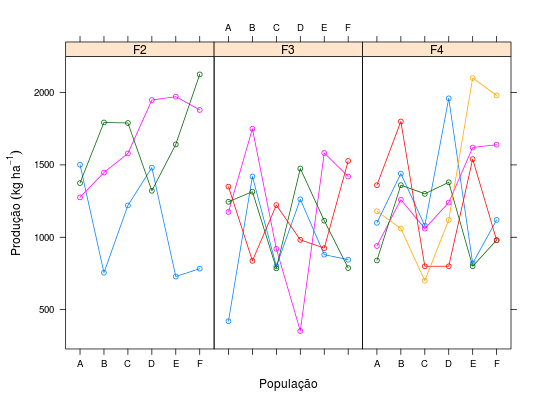

Dados da produção de grãos de feijão obtidos por Corte et al. (2002) relativos à avaliação de 6 populações segregantes avaliadas nas gerações F\(_{2}\), F\(_{3}\) e F\(_{4}\) com diferente número de blocos. O delineamento foi em blocos casualizados e cada geração corresponde a um experimento separado. Sendo assim, a identificação dos blocos é para cada experimento (geração).
Um data.frame com 72 observações e 4 variáveis, em que
gerblocpopprodRAMALHO et al. (2005), Tabela 8.8, pág. 123.
Corte, H. R., Ramalho, M. A. P., Gonçalves, F. M. A., Abreu. A de F. B. Natural Selection for Grain Yield in Dry Bean Population Bred by the Bulk Method. Euphytica. Wageningen. v.123, n.3. 2002
library(lattice) data(RamalhoEg8.8)#> Warning: data set ‘RamalhoEg8.8’ not foundstr(RamalhoEg8.8)#> 'data.frame': 72 obs. of 4 variables: #> $ ger : Factor w/ 3 levels "F2","F3","F4": 1 1 1 1 1 1 1 1 1 1 ... #> $ bloc: Factor w/ 5 levels "1","2","3","4",..: 1 2 3 1 2 3 1 2 3 1 ... #> $ pop : Factor w/ 6 levels "A","B","C","D",..: 1 1 1 2 2 2 3 3 3 4 ... #> $ prod: num 1501 1276 1375 756 1447 ...xtabs(~pop + ger, data = RamalhoEg8.8)#> ger #> pop F2 F3 F4 #> A 3 4 5 #> B 3 4 5 #> C 3 4 5 #> D 3 4 5 #> E 3 4 5 #> F 3 4 5ftable(with(RamalhoEg8.8, tapply(prod, list(ger = ger, pop = pop, bloc = bloc), FUN = identity)))#> bloc 1 2 3 4 5 #> ger pop #> F2 A 1501.3 1275.9 1374.7 NA NA #> B 755.6 1447.2 1793.4 NA NA #> C 1220.3 1579.1 1789.6 NA NA #> D 1481.4 1948.1 1321.2 NA NA #> E 728.8 1971.6 1641.9 NA NA #> F 783.3 1879.6 2125.5 NA NA #> F3 A 420.0 1175.0 1245.0 1350.0 NA #> B 1420.0 1750.0 1315.0 837.5 NA #> C 800.0 920.0 785.0 1222.5 NA #> D 1262.5 352.6 1475.0 982.5 NA #> E 880.0 1582.5 1115.0 925.0 NA #> F 845.0 1420.0 787.5 1527.5 NA #> F4 A 1100.0 940.0 840.0 1360.0 1180.0 #> B 1440.0 1260.0 1360.0 1800.0 1060.0 #> C 1080.0 1060.0 1300.0 800.0 700.0 #> D 1960.0 1240.0 1380.0 800.0 1120.0 #> E 820.0 1620.0 800.0 1540.0 2100.0 #> F 1120.0 1640.0 980.0 980.0 1980.0xyplot(prod ~ pop | ger, data = RamalhoEg8.8, groups = bloc, type = c("p", "a"), as.table = TRUE, layout = c(NA, 1), xlab = "População", ylab = expression("Produção"~(kg~ha^{-1})))